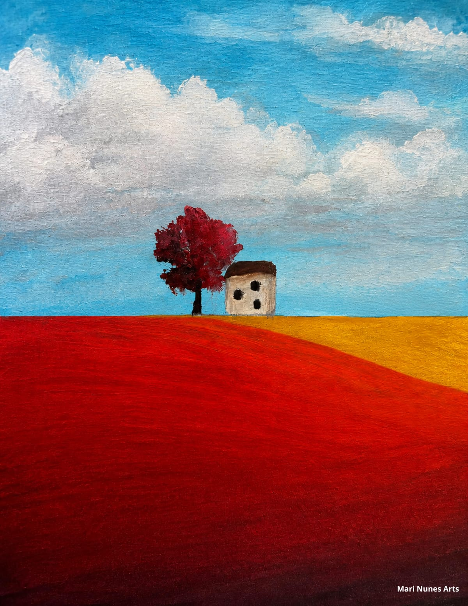

Entre o Vermelho e o Azul
- Técnica
- Giz pastel oleoso sobre papel
- Dimensões
- 30 × 40 cm
- Ano
- 2024
- Formato
- Original
- Situação
- Coleção particular
Um experimento com cor pura: campos vermelho e dourado dissolvem a paisagem em blocos de sensação, entre o real e o abstrato.
Sobre a técnica, no Diário do Ateliê: Giz pastel oleoso: o que é, como usar e técnicas para iniciantes